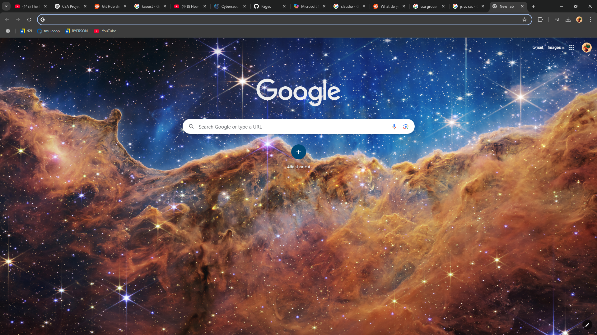
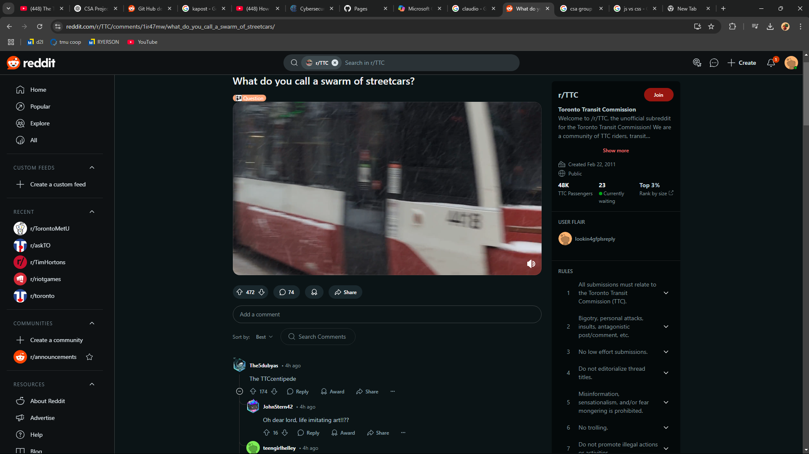

Welcome to Kapost
The CSA Group uses the marketing operational software called Kapost. This powerful software allows users to create, track, and manage planned or ongoing projects.
To get started, please bookmark the following pages:
The flow of a project can be broken down into four simple steps:
- Receive marketing brief from Marketing Managers
- Creation of initiative and deliverables
- Adding deliverables to the trackers
- Monitor and manage the progress of the deliverables
Creating a project
Step 1: Create a Initiative
To create an initiative, select the "Create" button, highlighted in green. Enter the initiative title mentioned in the brief. The title format is: "TIC | title | year". Select "Campaign Phase 1" and click "Create".
Step 2: Create deliverables
To create a deliverable, select the content tab and select add content. Refering to the brief, create all deliverables requested. The title format is: "TIC | title | content type".
Step 3: Fill in the custom fields field detail
Ensure that the custom fields are filled correctly with the information provided in the brief. Make sure that the content author is set to the marketing manager that sumbited the brief. At the bottom of the fields you will find the PM use only fields, set in-progress field to on-schedule if the deadlines are meet. Select at-risk if their are delays to the project, fill out PM notes to track the delays.
Step 4: Adjust workflow
Workflow task are shown on the right hand side, assign deadlines and task appropriately. Content Creation *assign these tasks to Tommy(deadline for review and content creation will be decided based on Tommy's schedule) Content Review *assign these tasks to the Market Manager responsible for the content piece Content design *assign these tasks to Navigate Group
Step 4a: Translations if required
If the content requires translations, create a seperate content piece with the prefix ending in its required language (EN,FR,DE, etc). ONLY send the legal approved document to the translations agency (ARGOS). Add a task to the workflow by selecting the add task icon, title it "send for translations - insert language" and a seperate task titled "translations uploaded". Check off task apporiatily when they are completed. Eliminate unnecessary tasks(content creation, content review) leaving only design and design review. At the bottom of the custom fields, select the related content field and connect the translation kapost to the English copy. German translation are handled internally by our German team (Renate and Natalie)
Step 5: comment section
At the bottom of kapost you will find a comment section. on-going or planned changes to the content piece should be tracked in the comment section. To initiate the creation of the content piece @mention Tommy and craete a message for brief review.